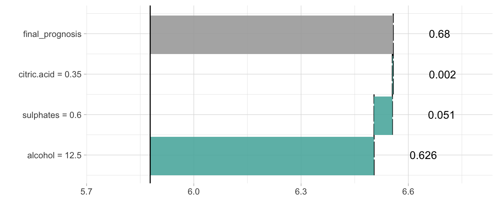

Chapter 4 Local structure
Explainers presented in this chapter are designed to better understand the local structure of a black box in a single point. Example applications:
- explanations for predictions. Can be used to validate if a specific prediction is not accidental, is it based on variables important in the domain.
- examination of curvature around a specific point (single observation). Can be used to determine the strength of influence onto a final model. Is it an outlier?
There are more interesting applications. Find out some of them in the Why Should I Trust You? article (Ribeiro, Singh, and Guestrin 2016).
4.1 Basics
Most ML algorithms do not learn from mistakes. One calculates predictions and there is no room for improvement.
But! The local predictions can change that! Understanding what causes wrong decisions may lead to model improvements. After all, if our prediction is wrong we shall update the model.
4.2 Local Interpretable (Model-agnostic) Visual Explanations

Cheatsheet
The live package (see (Staniak and Biecek 2017)) may be seen as an extension of the lime method (see (Ribeiro, Singh, and Guestrin 2016)). It is based on mlr general framework for training of machine learning models (see more (Bischl et al. 2016)).
Let’s see an example. We will use the HR_rf_model trained with the randomForest package on Human Resources Analytics data.
Around a selected point we will fit a linear model.
library("live")
library("randomForest")
library("breakDown")
HR_data$left <- as.numeric(as.character(HR_data$left))
HR_rf_model <- randomForest(left~., data = HR_data,
ntree=100)
similar <- sample_locally(data = HR_data, explained_instance = HR_data[1,], explained_var = "left", size = 2000)
similar <- add_predictions(HR_data, similar, HR_rf_model)
trained <- fit_explanation( live_object = similar, white_box = "regr.lm", selection = FALSE)Fitted model may be plotted with waterfall plot …
plot_explanation(trained, "waterfallplot", explained_instance = HR_data[1,])
… or forest plot …
plot_explanation(trained, "forestplot", explained_instance = HR_data[1,])
For more details consult the following vignette.
4.3 breakDown

Cheatsheet
The breakDown package (P. Biecek 2017) explains components of model prediction for a single observation. Right now it’s working for lm and glm models. Break Down Plots are inspired by waterfall plots created by xgboostExplainer package.
Break Down Plots show the contribution of every variable present in the model.
Let’s see an use case for the wine dataset.
The problem that we are going to solve is to create a model that predicts wine quality and then use the model and explain it’s prediction for a single wine.
We start with a linear Gaussian model for quality with three dependent variables citric.acid, sulphates, alcohol.
model <- lm(quality ~ citric.acid + sulphates + alcohol,
data = wine)
model$coefficients## (Intercept) citric.acid sulphates alcohol
## 2.2847360 0.1480342 0.4660404 0.3153252There are just four model coefficients, so it’s easy to write down the formula for model predictions.
\[ \hat y = 2.2847360 + 0.1480342 * citric.acid + 0.4660404 * sulphates + 0.3153252 * alcohol \]
But is it easy to explain prediction for a single observation?
new.wine <- data.frame(citric.acid = 0.35,
sulphates = 0.6,
alcohol = 12.5)
predict(model, newdata = new.wine)## 1
## 6.557737We see, that this wine got higher quality score than the average. But why?
This is where breakDown package is useful. It takes parts of predictions and visualize them. These parts are being calculated by the predict function with type = "terms".
predict(model, newdata = new.wine, type = "terms")## citric.acid sulphates alcohol
## 1 0.002340197 0.0513358 0.6261516
## attr(,"constant")
## [1] 5.877909Now it’s easy to see that impact of the predicted score have the high alcohol level in this particular wine.
Please note, that these values are NOT calculated as x*beta.
model$coefficients * cbind(intercept = 1, new.wine)## intercept citric.acid sulphates alcohol
## 1 2.284736 0.05181196 0.2796242 3.941565This is because, when we think about effect of an alcohol we would like to compare this particular wine with wine with average alcohol concentration not wine with zero alcohol.
So, since this particular wine is \(1.985733\) units of alcohol stronger than an average wine
new.wine$alcohol - mean(wine$alcohol)## [1] 1.985733thus the final effect of the alcohol on the wine quality will be
model$coefficients["alcohol"] * (new.wine$alcohol - mean(wine$alcohol))## alcohol
## 0.6261516Same with other variables.
These calculations are easy to do with breakDown package.
library("breakDown")
br <- broken(model, new.wine, baseline = "Intercept")
br## contribution
## alcohol = 12.5 0.626
## sulphates = 0.6 0.051
## citric.acid = 0.35 0.002
## final_prognosis 0.680
## baseline: 5.877909plot(br)
References
Ribeiro, Marco Tulio, Sameer Singh, and Carlos Guestrin. 2016. “‘Why Should I Trust You?’: Explaining the Predictions of Any Classifier.” In, 1135–44. ACM Press. doi:10.1145/2939672.2939778.
Staniak, Mateusz, and Przemysław Biecek. 2017. Live: Local Interpretable (Model-Agnostic) Visual Explanations.
Bischl, Bernd, Michel Lang, Lars Kotthoff, Julia Schiffner, Jakob Richter, Erich Studerus, Giuseppe Casalicchio, and Zachary M. Jones. 2016. “mlr: Machine Learning in R.” Journal of Machine Learning Research 17 (170): 1–5. http://jmlr.org/papers/v17/15-066.html.
Biecek, Przemyslaw. 2017. BreakDown: BreakDown Plots. https://CRAN.R-project.org/package=breakDown.